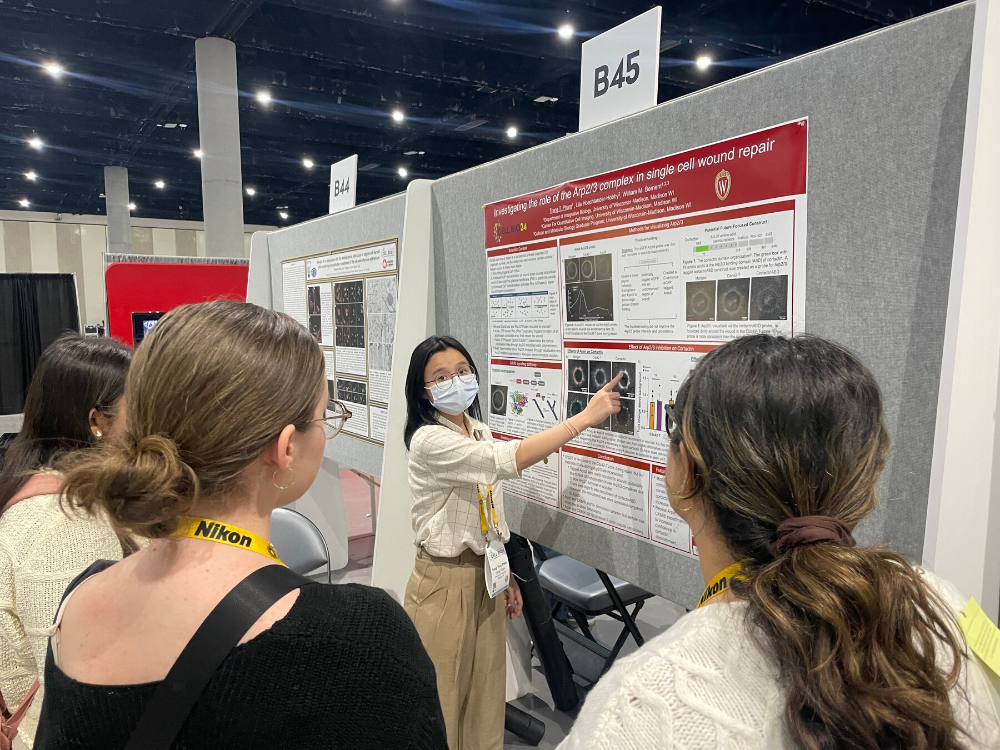
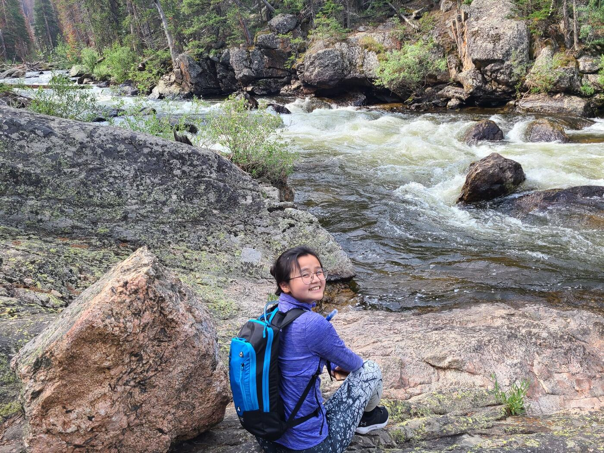

Trang Pham
Hello, my name is Trang! I am a Molecular and Cell Biology graduate from the University of Wisconsin–Madison. My experiences in cell biology, biotechnology, and clinical care have strengthened my commitment to medicine and to making healthcare more accessible, especially for underserved communities.
Team player
